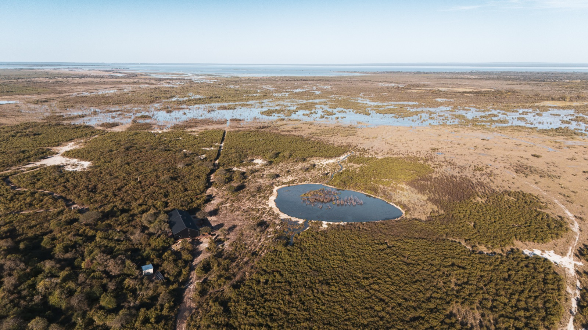
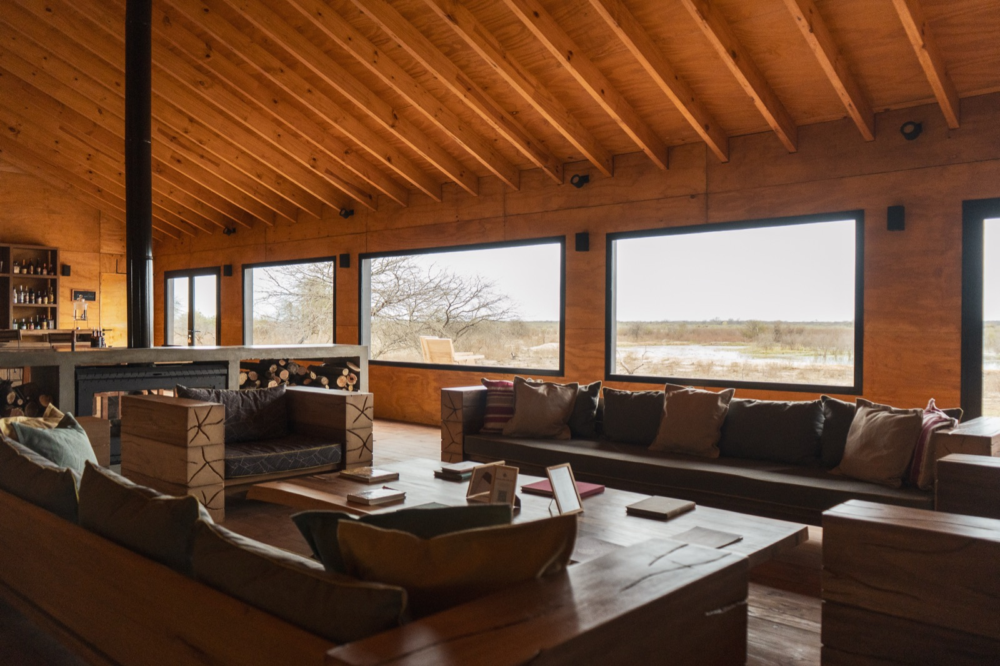
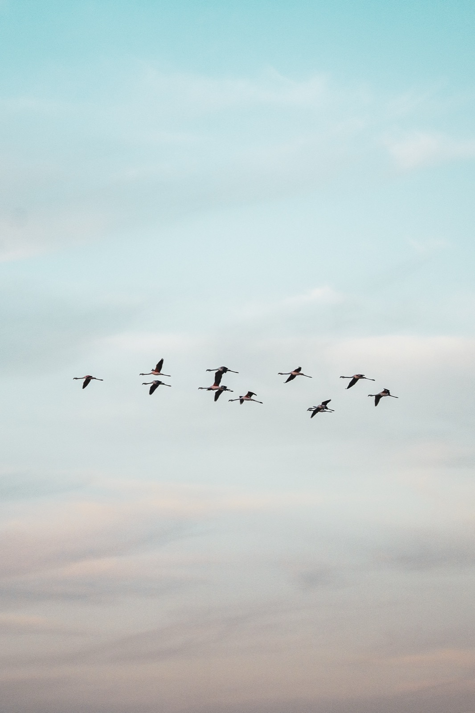
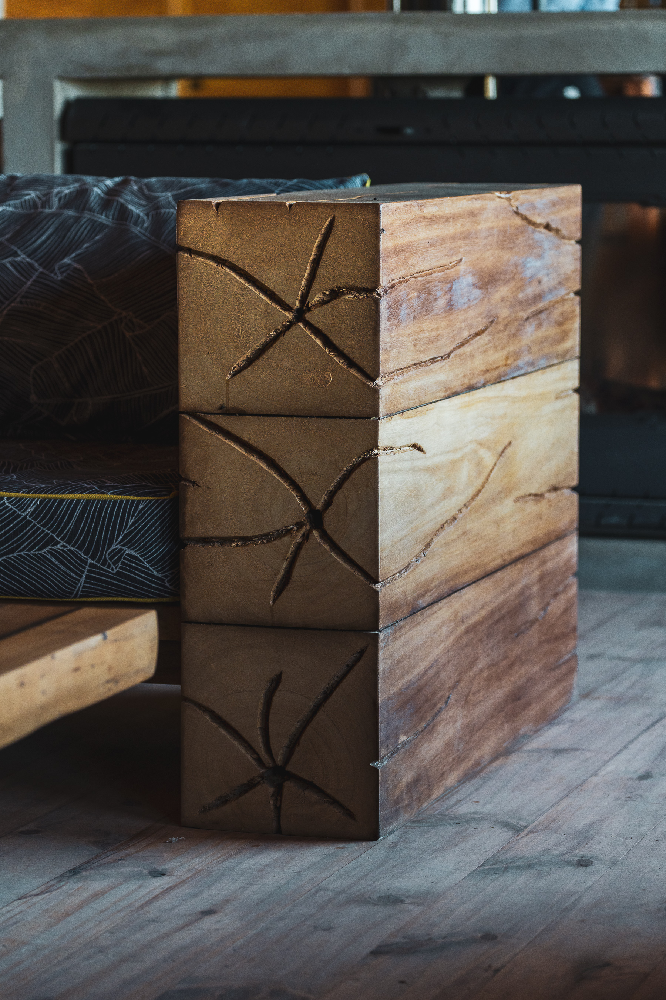
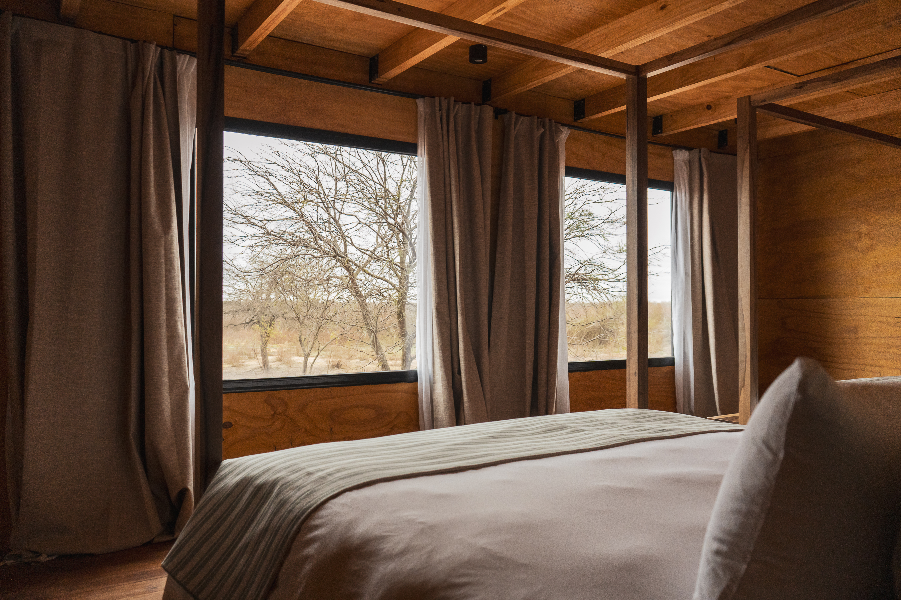
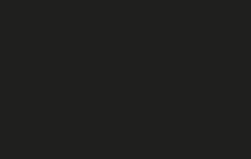
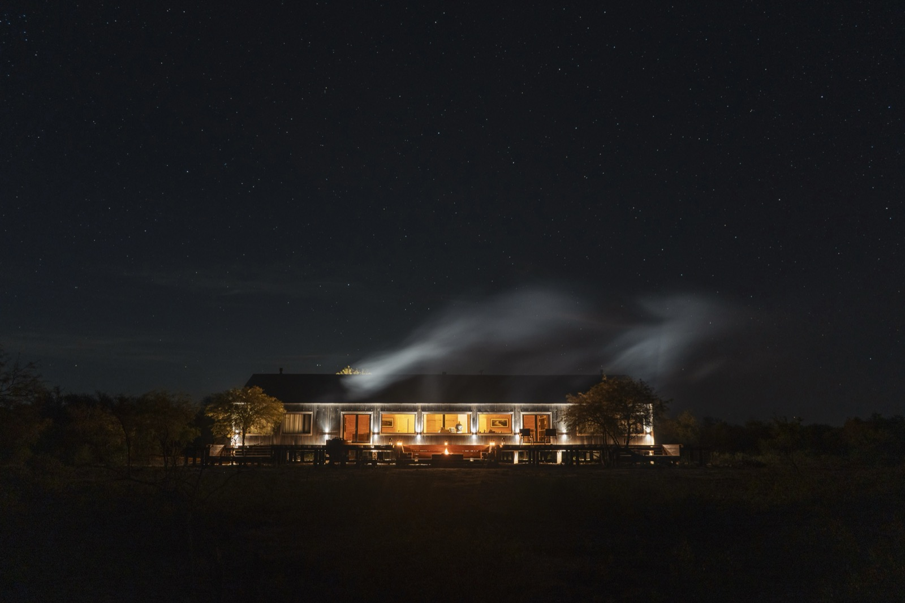
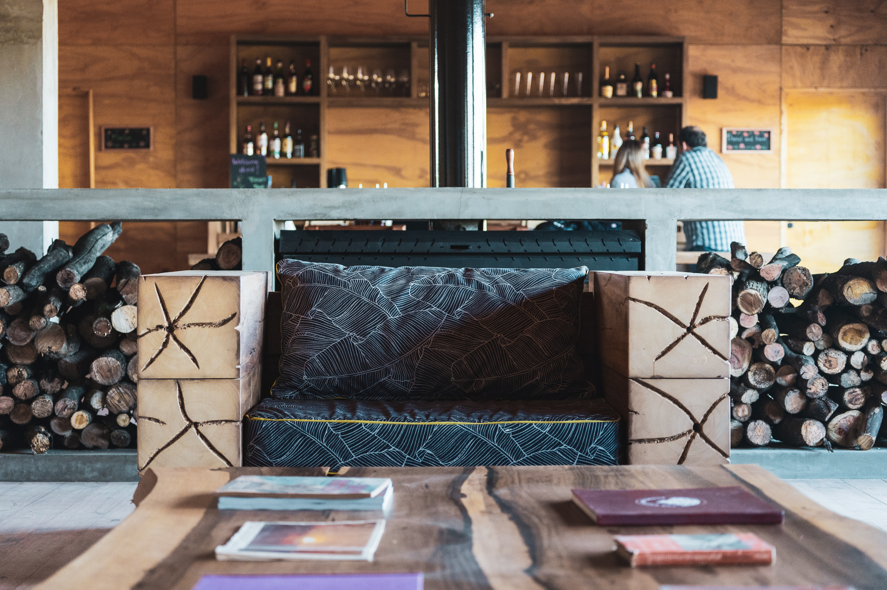

Tobar Lodge
Refugio en el norte argentino
CLIMA /
Subtropical seco
BIOMA /
Bosque Chaqueño
TERRENO /
60.000 m²
ÁREA CUBIERTA /
420 m²
UBICACIÓN /
Tucumán, Argentina


El proyecto se desarrolla en lo profundo del monte. El humedal al frente y la vegetación densa del bosque chaqueño al contrafrente funcionan que aseguran la mayor privacidad al tiempo que permiten la inmersión en dos entornos distintos y complementarios.
Su disposición elevada permite la protección ante las fuertes lluvias estacionales y, al mismo tiempo, implica una mínima huella en el suelo. De este modo, el edificio no se impone: se adapta al paisaje.



La entrada se abre hacia el horizonte. Al atravesar las puertas, la naturaleza se revela: los amplios ventanales enmarcan el paisaje y la austeridad de los interiores dirige la atención hacia la riqueza del exterior. Las habitaciones se distinguen por su orientación: cada una se abre hacia un punto cardinal distinto, capturando las vistas más representativas del entorno: la arboleda, la laguna y la precordillera.
El lodge, lugar de refugio y descanso, vincula a las personas con la naturaleza prístina de un paisaje que se expresa con fuerza y sin intervención.

Habitar lo inhóspito, conectar con lo esencial.
El lodge está diseñado para ser habitado en dos estaciones opuestas: un verano húmedo, lluvioso y cálido, y un invierno frío y seco. La estructura cuenta con alta masa térmica para regular la temperatura interior, ventilación cruzada mediante ventanas orientadas según la dirección predominante del viento y muros opacos bien aislados en la fachada más expuesta a la radiación solar.
Así, lo que se percibe como sencillo y austero es, al mismo tiempo, funcional y eficiente.

